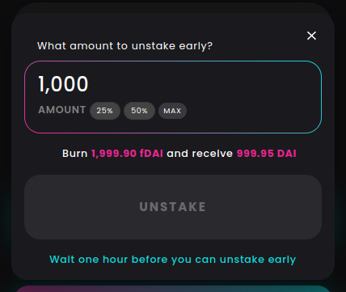
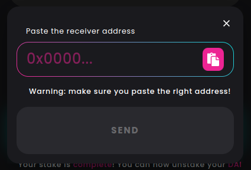

Dashboard
The Stake Dashboard allows you to see all your active stakes and perform actions with them. More specifically, from the Dashboard, you can:
- Select a stake from the list
- Unstake part or all of your staked funds early
- Withdraw your funds when the stake is finished
- Mint a stake NFT
- Transfer a stake NFT
Select a stake
Note
Only active stakes are shown in the Dashboard. Active stakes are stakes still containing funds. For example, if a stake is over but you didn’t withdraw your funds, that stake will still be considered active. If you withdraw all funds from a stake, no matter if that stake is over or ongoing, it will become inactive and disappear from the Dashboard.
Also, the active stakes on the Dashboard are those in your wallet. If you mint a stake NFT and transfer it to another address, the corresponding stake will not appear in your Dashboard anymore. However, it will appear in the Dashboard of the account you transferred it to.
You can select any active stake from the dropdown. The information displayed on the dropdown are, from left to right:
- Staked token logo and ticker
- Original staked amount
- NFT icon, if you minted a stake NFT for that particular stake
- Remaining time in days, hours or minutes
Once you have selected a stake, all the information displayed below, as well as both action buttons (Unstake early/withdraw & Mint NFT/Transfer NFT), refer to the selected stake.
Unstake early
If your stake is still ongoing, the first button is the UNSTAKE EARLY button, which opens a modal.
Note
Unstaking early requires burning fTokens. The easiest way to obtain fTokens in your wallet is to create a stake without Flashstaking, because Flashstaking burns the fTokens in the same transaction they are minted. To disable Flashstaking, use the Advanced mode and uncheck “Flashstake your stake”.
Unstaking early is disabled for stakes that are less than one hour old.
In the amount field, select the amount of staked tokens you wish to unstake early. This amount has to be greater than zero and lower or equal to the remaining staked balance. Depending on the amount you wish to unstake early, the required amount of fTokens to burn changes. Unstaking early is disabled if your fToken balance is insufficient.
Withdraw funds
When the stake is over, you can withdraw your all of your remaining staked balance anytime. To do so, simply click the WITHDRAW button and validate the transaction with your wallet. The stake should disappear from the Dashboard after some time or after refreshing the page.
Mint NFT
Hint
You can also mint an NFT for your stake upfront, in the same transaction as it is created. To do so, use the Advanced mode and check “Mint stake as NFT”.
At any time while a stake is ongoing or after a stake is finished, you have the option to mint your stake as an NFT. The main benefit of minting a stake NFT is to be able to transfer your stake to another wallet. To mint an NFT, simply click the MINT NFT button and validate the transaction with your wallet. The NFT icon should appear in the dropdown item corresponding to the current stake.
Transfer NFT
Once you have minted your stake as an NFT, you can transfer it by first clicking the TRANSFER NFT button. That will open a dialog with a field where you can paste the address you wish to send your NFT to. Pasting is done either through Crtl+V, right-click + Paste, or by clicking the paste button on the right side of the field. Make sure that you paste a valid Ethereum address, else the input won’t change.
Once a valid Ethereum address has been entered, you can simply press SEND and validate the transaction with your wallet. When the transaction is validated, the stake will disappear from your Dashboard and appear in your recipient’s.